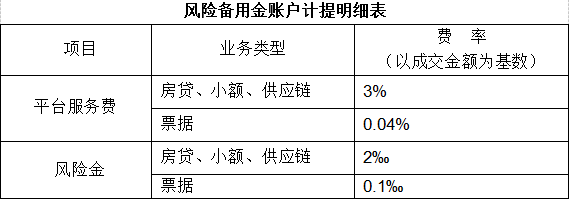

风险备用金账户是指广东安广融合电子商务股份有限公司出于为平台投资用户共同利益考虑，以安广融合名义单独开设并由银行进行资金托管的专款专用账户。为规范执行提取风险备用金、管理风险备用金帐户、合理使用风险备用金，特制定本办法。
1.1平台设立一个独立的风险保证金账户，参照监管原则，风险备用金全部应来源于平台上向其所服务的借款人收取的，借款人成功借款后，按照借款本金以一定比例提取并划入风险备用金账户。
1.2依据平台上不同的业务类型，风险备用金计提比例不同，详见《风险备用金账户计提明细表》，所计提的风险备用金存放入专户进行管理，各产品类型所对应计提标准与方式由安广平台制定并解释，安广融合有权根据实际业务需要对内容进行调整，如作修改，安广融合平台将及时进行披露。
2.1“风险备用金账户”资金主要用于在一定限额内补偿安广融合平台所服务的投资用户（债权人），由于借款人（债务人）违约而造成没有履行债务行为，当逾期还款超过30日时，安广融合平台将按照“风险备用金账户”使用规则，实施偿付。
2.2平台与银行合作建立的一个风险备用金账户，独立账户存放，专款专用，双方签约，约定缴存比例及启用条件，每一次启用资金必须是符合条件下经银行审核，平台的风险备用金账户接受专业机构的定期审计。
风险备用金账户的资金使用遵行以下规则：
3.1违约赔付规则：当平台上的投资项目借款人没有按时还款并逾期超过30天后，平台启用风险备用金偿付制度对投资人进行赔付。
3.2时间顺序规则：风险备用金对投资人逾期应收赔付金额的偿付按照该债权发生的时间顺序进行偿付分配，先偿付时间发生在前的债权，后偿付时间发生在后的债权。倘若有多个项目同时逾期或违约，根据借款的时间顺序进行赔付；
3.3债权比例规则：“风险备用金账户”资金对同一借款协议下的不同投资用户（债权人）逾期应收赔付金额的偿付按照各债权金额占同协议内发生的债权总额的比例进行偿付分配；或当“风险备用金账户”资金不足以支付当期投资用户所对应的逾期赔付金额时，应偿付的投资用户按照各自对应的逾期应收赔付金额占逾期应收赔付总额的比例进行偿付分配。如：举例来说，某一借款项目逾期，借款金额为10万元，收益率为10%，到期未还产生逾期款金额为11万元，此时风险保证金账户中仅剩余6万元，不足以支付全部的逾期金额的理。某投资者用户在该项目中投资了1万元，占出借总金额的10%，则该用户得到的风险保证金赔付金额为10%x60000=6000元。
3.4 只赔付本金原则：风险备付金只对本金部分偿付，不对收益部分偿付。
3.5有限偿付规则：风险备用金对投资人逾期应收的赔付以该账户的资金总额为限，当该账户余额为零时，自动停止对投资人逾期应收赔付金额的偿付，直到该账户获得新的风险备用金。
3.6收益转移规则：当投资人得到了风险备用金的足额赔付后，该债权对应的借款人其后为该笔债权所偿还的本金、利息及罚息归属风险备用金账户；如债权有抵押、质押及其他担保的，则平台代借款人处置抵押质押物的所得等也归属风险备用金账户。
3.7金额上限规则：当风险备用金账户中的金额超过当时平台上所有债权本金金额的10%时，将停止计提风险备用金；当低于10%时，又重新开始计提。
4.1风险备用金采用差额计提方法。
4.2当应计提风险备用金数额低于风险备用金账户余额时，不做冲减处理。
5.1风险备份金用于偿付借款人的违约债务。
5.2当平台停止运营或停止与P2P相关业务时，要对风险备付金账户进行清算、销户处理。
5.3当风险备付金账户偿付完违约债务后仍有余额时，这个余额归平台所有。
6.1赔付时提取风险备付金，必须经过审批流程。
6.2由风控部门提出赔付申请，赔付申请必须附赔付清单，流程如下：
6.3由财务部将资料递交银行进行赔付处理。
7.1安广平台将审慎管理“风险备用金账户”，并就账户及资金使用情况对投资用户进行定期披露，具体披露方式及解释权归安广融合平台所有。
7.2本办法由广东安广融合电子商务股份有限公司制定和解释。
7.3本办法自2016年6月12日开始施行。
附：“风险备用金账户”计提明细表
